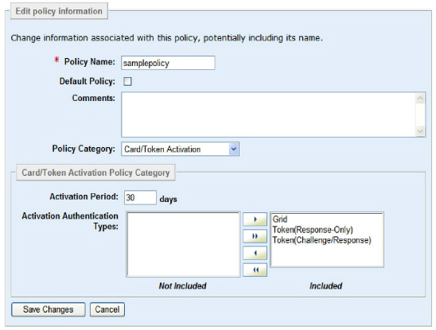

|
IdentityGuard Server 13.0 Administration Guide |
|
IdentityGuard Server 13.0 Administration Guide |
This procedure applies to grid activation and token activation.
The Card/Token Activation policy settings let you set the activation period for all users in a group. By default, users have 30 days before they must authenticate with a second-factor authentication method. This policy category also lets you set which second-factor authentication methods users must use to activate their accounts.
To configure activation period policies
1. Log in to the Entrust IdentityGuard Administration interface as the administrator.
 On the
Windows computer where Entrust IdentityGuard is installed
On the
Windows computer where Entrust IdentityGuard is installed
2. Select Policies on the menu bar.
A list of all policies appears on the List Policies tab.
3. Click any policy name to view its policy information.
The View Policy page appears for the policy selected.
4. From the Policy Category drop-down list, select Card/Token Activation.
5. On the View Policy page, click Edit Policy.
An editable version of the settings appear.

6. Edit the policies as required. Select a policy in the list to see its description.
The authentication methods can be in one of two lists (Included and Not Included). Buttons placed between the two lists allow you to move some or all options from one list to the other.
For instructions, see Move items between option lists .
Note: If the tokens assigned to your users can be used in both modes—response-only and challenge-response—both token options must be in the Included list of the Activation Authentication Types policy.
7. Click Save Changes.